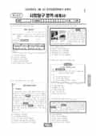

문제지

시험지 만들기준비하고 있어요. 열리면 아래 탭에서 바로 쓸 수 있어요.
전국연합학력평가 · 시·도교육청 주관
2024년 3월 고2 학력평가 사회탐구 세계사 1등급컷은 원점수 43점(추정), 표준점수 최고점은 78점입니다.
원점수 1등급컷은 공식 발표값이 아니라 EBSi·입시기관 값입니다. 등급별 값은 등급컷 표, 출처 구분은 데이터 원칙에 있습니다.

| 등급 | 표준점수 이상 | 인원(명) | 비율 |
|---|---|---|---|
| 1 | 71 | 1,052 | 4.05% |
| 2 | 64 | 2,019 | 7.77% |
| 3 | 57 | 3,278 | 12.62% |
| 4 | 51 | 4,455 | 17.15% |
| 5 | 46 | 5,068 | 19.5% |
| 6 | 42 | 4,650 | 17.9% |
| 7 | 39 | 3,124 | 12.02% |
| 8 | 36 | 1,625 | 6.25% |
| 9 | 29 | 713 | 2.74% |
시·도교육청 공개 자료
출처: 시·도교육청이 공개한 전국연합학력평가 성적 분석·통계자료(공개 자료 보기).
EBSi 응답자 기준으로 가장 많이 틀린 문항은 14번(3점)이고, 오답률은 68.9%입니다. 오답률 50%를 넘은 문항은 6개입니다.
| 순위 | 문항 | 배점 | 오답률 | 정답 | 많이 고른 오답 |
|---|---|---|---|---|---|
| 1 | 14번 | 3점 | 68.9% | ② | ① 21.6% |
| 2 | 12번 | 3점 | 59.5% | ① | ② 19.8% |
| 3 | 20번 | 3점 | 54.5% | ⑤ | ② 17.6% |
| 4 | 13번 | 3점 | 54.5% | ① | ④ 25.2% |
| 5 | 9번 | 3점 | 54.1% | ④ | ② 23.4% |
| 6 | 3번 | 3점 | 53.2% | ③ | ④ 16.2% |
| 7 | 19번 | 3점 | 48.6% | ⑤ | ④ 18.9% |
| 8 | 18번 | 2점 | 48.6% | ③ | ① 15.8% |
| 9 | 6번 | 2점 | 48.2% | ⑤ | ② 18% |
| 10 | 5번 | 3점 | 44.6% | ④ | ⑤ 30.2% |
| 11 | 2번 | 2점 | 39.6% | ④ | ③ 32.9% |
| 12 | 4번 | 2점 | 36.5% | ③ | ② 19.4% |
| 13 | 10번 | 3점 | 36% | ⑤ | ④ 13.1% |
| 14 | 8번 | 3점 | 36% | ④ | ③ 14.4% |
| 15 | 7번 | 2점 | 35.1% | ③ | ① 9.9% |
EBSi 가채점 응답자 기준 · 전 문항 중 오답률 상위 15문항
출처: EBSi 역대 등급컷·오답률 공개 화면. 가채점에 참여한 EBSi 이용자 응답이라 전체 응시자 정답률과는 다를 수 있습니다.
발행 기관: 시·도교육청(전국연합학력평가). 파일 위치: 이 사이트가 보관한 사본. 저작권은 발행 기관에 있습니다. 원본과 다르거나 게시 중단이 필요하면 연락처로 알려 주세요. 등급컷 출처 구분은 데이터 원칙에서 설명합니다.
막대 색은 역대 대비 난이도 · 진한 막대가 이 시험 · 막대를 누르면 그 회차로 이동
| 회차 | 1등급컷 | 표점 최고 | 1등급 표점 | 난이도 |
|---|---|---|---|---|
| 3월 학평2024년 고2이 시험 | 43 | 78 | 71 | 보통 |
| 11월 학평2023년 고2 | 46 | 73 | 70 | 쉬움 |
| 9월 학평2023년 고2 | 44 | 78 | 73 | 매우 어려움 |
| 6월 학평2023년 고2 | 47 | 74 | 71 | 매우 쉬움 |
| 3월 학평2023년 고2 | 42 | 79 | 71 | 어려움 |
| 11월 학평2022년 고2 | 44 | 77 | 71 | 보통 |
| 9월 학평2022년 고2 | 44 | 77 | 71 | 매우 어려움 |
| 6월 학평2022년 고2 | 47 | 73 | 71 | 쉬움 |
| 3월 학평2022년 고2 | 40 | 79 | 69 | 매우 쉬움 |
| 11월 학평2021년 고2 | 42 | 80 | 73 | 매우 어려움 |
세계사는 교육청 채점 결과 1등급 구분 표준점수는 71점, 최고점은 78점(263명)이었습니다. 1년 전 3월 고2(1등급 71점, 최고점 79점)과 1등급 컷이 같았고, EBSi 가채점 응답자 기준 오답률 50%를 넘은 문항은 6개였습니다.
가장 많이 틀린 14번(3점, 68.9%)은 새 헌법 제정과 나폴레옹 법전 편찬 등으로 (가), (나) 시기 사이의 사실을 묻는 문항, 12번(59.5%)은 환관 양복공이 옹립한 황제의 고사성어로 왕조를 묻는 문항, 20번(54.5%)은 1985년 소련 공산당 서기장이 된 '나'를 묻는 문항이었습니다.